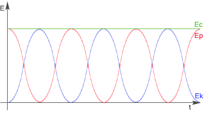

Ruch drgający prosty
Ruch drgający prosty jest ruchem najczęściej spotykanym w przyrodzie. Przykładami takiego ruchu są: ruch struny instrumentu, ruch ciężarka zawieszonego na sprężynie, ruch wahadła czy ruch tłoka w silniku. Przyczyną tego ruchu jest siła sprężystości.
Wielkości związane z tym ruchem:
x - wychylenie w danej chwili, odległość ciała od położenia równowagi
A - amplituda drgań, największe wychylenie z położenia równowagi
T - okres drgań
f - częstotliwość drgań, ilość drgań w jednostce czasu
- częstość kołowa
Ruch drgający można rozpatrywać jako rzut ruchu po okręgu.

Z rysunku odczytujemy, że:
Przekształcając równania otrzymujemy równanie ruchu drgającego.
|
Jak widać w równaniu ruchu drgającego wychylenie w ruchu harmonicznym zmienia się w czasie sinusoidalnie. Tą zależność przedstawia wykres:
Prędkość, przyspieszenie i siła
Rozważmy ponownie ruch harmoniczny jako rzut ruchu jednostajnego po okręgu. Wykorzystując zależności pokazane na rysunku wyprowadźmy wzór na prędkość w ruchu harmonicznym.
prędkość ciała poruszającego się po okręgu
składowa prędkości
promień okręgu

Korzystamy z wzoru na prędkość w ruchu po okręgu:
Jak wynika z rysunku za r możemy podstawić A (największe wychylenie) i otrzymuje wzór na prędkość w ruchu harmonicznym.
Prędkość maksymalną ciała osiąga w położeniu równowagi.
Zależność prędkości od czasu w ruchu harmonicznym przedstawia wykres:
Wzór na prędkość w ruchu harmonicznym można także wyprowadzić obliczając pochodną V=dx/dt.
Wykonajmy podobny rysunek i wyprowadźmy wzór na przyspieszenie w ruchu harmonicznym.
Korzystając z rysunku odczytujemy zależności:
Za podstawiamy wzór na przyspieszenie w ruchu po okręgu:
Otrzymujemy wzór na przyspieszenie w ruchu harmonicznym:
Znak minus oznacza, że kierunek przyspieszenia jest przeciwny względem kierunku wychylenia.
Przyspieszenie maksymalne ciało osiąga w punkcie największego wychylenia:
Zależność przyspieszenia od czasu w ruchu harmonicznym przedstawia wykres:
Wzór na przyspieszenie w ruchu harmonicznym można wyprowadzić także obliczając pochodną a=dV/dt.
Ruch drgający prosty jest ruchem niejednostajnie zmiennym.
Siła w ruchu harmonicznym jest wprost proporcjonalna do wychylenia i przeciwnie zwrócona. Możemy wyprowadzić jej wzór, korzystając z II zasady dynamiki:
Po podstawieniu wartości przyspieszenia w ruchu harmonicznym otrzymujemy:
Aby zapisać powyższą równość w prostszy sposób wprowadza się współczynnik proporcjonalności k:
A więc wzór na siłę w ruchu harmonicznym jest następujący:
Przemiany energii
Ciało drgające posiada energię kinetyczną i potencjalną sprężystości. Wyprowadźmy wzory na obie energie.
Energia potencjalna sprężystości wyraża się ogólnym wzorem:
Po podstawieniu do tego wzoru równanie ruchu drgającego otrzymujemy wzór na energię potencjalną sprężystości w ruchu drgającym:
Energia kinetyczna wyraża się ogólnym wzorem:
Wstawiamy do niego wzór na prędkość prędkość ruchu harmonicznym i otrzymujemy wzór na energię kinetyczną w ruchu drgającym:
A więc energia całkowita ciała drgającego wynosi:
Energia całkowita jest proporcjonalna do kwadratu amplitudy.

Wahadło matematyczne
|
Dla niewielkich kątów wahadło matematyczne wykonuje ruch harmoniczny ( )
Na rysunku przedstawione są działające siły, gdzie siły F i F' to siły składowe. Siłę F' równoważy siła naciągu nitki N, więc o ruchu wahadła decyduje tylko siła F. Z rysunku odczytujemy wartość funkcji sinus:
Porównujemy obie wartości:
Otrzymany wzór skłania ku wnioskowi, że siła jest wprost proporcjonalna do wychylenia i przeciwnie zwrócona, więc potwierdza to wcześniejsze stwierdzenie, że jest to ruch harmoniczny.
Wyprowadźmy wzór na okres drgań wahadła matematycznego.
Porównujemy wzory na stałą k:
Okres wahadła matematycznego jest wprost proporcjonalny do pierwiastka z długości wahadła.
Gdyby wahadło matematyczne znajdowało się nie tylko w polu grawitacyjnym, to okres drgań wahadło wynosiłby:
wypadkowe przyspieszenie
Drgania tłumione (gasnące)
Z doświadczenia wiemy, że wahadło pobudzone jednorazowo do drgań przez wychylenie go z położenia równowagi waha się w miarę upływu czasu coraz słabiej, aż wreszcie zatrzymuje się. Świadczy to o rozpraszaniu energii. Drgania takie nazywamy drganiami tłumionymi lub gasnącymi.

Ciało drgające musi wykonywać pracę przeciwko sile oporu, zużywając na to swoją energię. Jeśli maleje energia ciała, to maleje również amplituda drgań ( )
relaksacji jest to czas, po którym amplituda drgań zmniejsza się e razy. (e=2,71872; e - podstawa logarytmu naturalnego).
logarytmiczny dekrement tłumienia
Drgania wymuszone. Rezonans mechaniczny
Drgania, które wykonuje ciało wychylone ze stanu równowagi i pozostawione samemu sobie, tj. nie poddane działaniu dodatkowych sił zewnętrznych określamy mianem drgań własnych ciała. Drgania własne ciała mają zawsze tę samą charakterystyczną dla niego częstotliwość, niezależnie od sposobu wzbudzenia.
Wiemy, że zanikaniu wahań wahadła można zapobiec przez okresowe pobudzanie go do ruchu. Jeżeli energia dostarczana w każdym impulsie pobudzającym zrównoważy energię rozpraszaną, to drgania wahadła staną się niegasnące. Takie drgania wzbudzone za pomocą zmieniających się okresowo sił zewnętrznych albo też przenoszone z innego ciała drgającego nazywamy drganiami wymuszonymi.
Przeprowadźmy doświadczenie:
Pobudzamy do drgań wahadło A, obserwujemy, że jego drgania stopniowo zanikają, coraz bardziej zaczyna się wahać wahadło C. Wahadło B pozostaje cały czas w spoczynku.
Zaobserwowaliśmy zjawisko rezonansu mechanicznego, czyli zjawisko przekazywania drgań (energii drgań) ciał o takiej samej częstotliwości drgań własnych.
Ruch drgań wymuszonych wyrażana równanie:
gdzie to siła zewnętrzna, która powoduje drgania wymuszone.
Wyprowadźmy wzór na amplitudę drgań w tym ruchu poprzez podstawienie do równania ruchu drgań wymuszonych wzorów na a, x i w ruchu drgającym:
- maksymalna wartość siły
Zamiast k podstawiamy wzór:
- częstość drgań własnych
Gdy
Nieskończony wzrost amplitudy nie ma sensu fizycznego i w praktyce nie pozwalają na to siły oporu lub układ ulega wcześniej zniszczeniu.
Wykres przedstawia dwa ujęcia tego zjawiska: teoretyczne (niebieskim kolorem) i praktyczne (czerwonym kolorem).
Zjawisko rezonansu jest wykorzystywane w różnorodnych urządzeniach akustycznych, w obwodach prądu zmiennego i w fizyce atomowej. Niekiedy jednak należy unikać jego skutków. Drgania maszyn lub urządzeń, albo też powtarzające się okresowo podmuchy wiatru, mogą się bowiem znaleźć w rezonansie z drganiami własnymi budynków, mostów i spowodować ich zniszczenie w wyniku ogromnego wzrostu amplitudy drgań wymuszonych.
Wahadło fizyczne
|
Z rysunku odczytujemy wartości dla funkcji sinus, a następnie je porównujemy:
Siła jest wprost proporcjonalna do wychylenia i przeciwnie zwrócona, a więc dla niewielkich wychyleń bryła sztywna wykonuje ruch harmoniczny.
Wyprowadźmy wzór na przyspieszenie i na okres drgań wahadła fizycznego:
Porównujemy wzory na moment M dla ruchu obrotowego (gdzie r to odległość między środkiem ciężkości a punktem zaczepienia bryły sztywnej):
Otrzymujemy wzór na przyspieszenie wahadła fizycznego. Jest ono wprost proporcjonalne do wychylenia i odwrotnie proporcjonalne do momentu bezwładności I.
Porównujemy wzory na przyspieszenie (dla wahadła fizycznego i w ruchu harmonicznym):
Otrzymujemy wzór na okres drgań wahadła fizycznego.
Długość zredukowana wahadła fizycznego równa jest długości wahadła matematycznego, który ma taki sam okres drgań.
Ruch falowy. Rodzaje fal
|
Ośrodek sprężysty ma tę właściwość, ze siłom, które usiłują spowodować jego odkształcenie, przeciwstawia siły sprężyste, które po usunięciu sił odkształcających usuwają odkształcenie. Wytrącenie zespołu cząsteczek takiego ośrodka z położenia równowagi powoduje ich drganie wokół tego położenia, przy czym wskutek jego właściwości sprężystych zaburzenie przenosi się z jednej warstwy ośrodka na następną, wprawiając ją w ruch drgający o takim samym okresie drgań. Takie właśnie przenoszenie drgań nazywamy ruchem falowym lub krótko falą.
Przykładem ruchu falowego są fale rozchodzące się kołowo na powierzchni wody po wrzuceniu kamienia. Obserwując zachowanie się trocin lub słomek pływających na powierzchni wody, można łatwo stwierdzić, że rzeczywisty ruch cząsteczek wody polega na ich podnoszeniu się i opadania w jednym miejscu, natomiast sama fala, przenosząca te drgania, rozchodzi się po powierzchni wody. Ośrodek nie porusza się więc wraz z rozchodzącą się falą, lecz jedynie jego cząsteczki drgają wokół położeń równowagi, zaś istotę ruchu falowego stanowi przenoszenie się tych drgań na coraz to dalsze warstwy ośrodka.
Fale mechaniczne nie mogą rozchodzić się w próżni. Rozchodzą się w ośrodkach sprężystych.
|
|
|
Fale mechaniczne (ze względu na wymiar) dzielimy na:
- fale liniowe (jednowymiarowe) - np. na gumowym wężu,
- fale powierzchniowe (dwuwymiarowe) - np. na wodzie,
- fale przestrzenne (trójwymiarowe) - np. dźwięk w powietrzu.
W zależności od kierunku drgań cząsteczek ośrodka w stosunku do kierunku rozchodzenia się fali rozróżnia się fale poprzeczne i fale podłużne.
|
Można ją otrzymać na przykład przez szybkie poruszanie się w górę i w dół jednego końca gumowego sznura, przymocowanego drugim końcem do ściany. Powstanie fali poprzecznej wiąże się ze zmianą kształtu ciała, a więc może się ona rozchodzić jedynie w ośrodkach mających sprężystość postaci (głównie w ciałach stałych). Cząsteczki ośrodków doskonale sprężystych wykonują drgania harmoniczne, zatem fala poprzeczna rozchodząca się w takim ośrodku ma postać sinusoidy.
Prędkość fali poprzecznej w płynach lub cienkich, długich prętach wynosi:
- współczynnik ściśliwości płynu; moduł sztywności ciała stałego
- gęstość ośrodka
|
Można ją otrzymać uderzając z jednej strony młotkiem w koniec długiej sprężyny z cienkiego drutu zawieszonej na niteczkach. Obserwujemy wówczas zagęszczanie się zwojów sprężyny w pobliżu miejsca uderzenia i przesuwanie się tego zagęszczenia wzdłuż jej osi, przy czym kierunek drgań zwojów sprężyny, jest zgodny z kierunkiem rozchodzenia się fali.
Podobne zjawisko rozchodzenia się drgań cząsteczek można zaobserwować w rurze wypełnionej powietrzem, jeżeli w jednym z jej końców wywołane zostanie zagęszczenie. Rozchodząca się w rurze fala podłużna polega na zagęszczaniu i rozrzedzaniu drgających warstw powietrza.
Ponieważ rozchodzenie się fal podłużnych jest związane z okresowymi zmianami gęstości ośrodka, fale te mogą się rozchodzić we wszystkich ośrodkach wykazujących sprężystość objętości, a więc zarówno w ciałach stałych, cieczach jak i w gazach.
Prędkość fali podłużnej w płynach lub cienkich, długich prętach wynosi:
- moduł Younga
- gęstość ośrodka
Ze względu na czoło fali fale dzielą się na płaskie i kuliste. Jeżeli drgania rozchodzą się w jednym kierunku, to powierzchnie fali są płaszczyznami i mówimy o fali płaskiej. Jeżeli zaś fala wywołana przez punktowe źródło drgań rozchodzi się w ośrodku jednorodnym, to prędkość jej jest jednakowa we wszystkich kierunkach i powierzchnia fali ma postać kuli. Mówimy wtedy o fali kulistej.
Wielkości charakteryzujące falę to:
- amplituda fali
- okres fali
- częstotliwość fali
- prędkość fali (prędkość fali w danym ośrodku jest stała)
Fala przebywa drogę równą swojej długości w czasie okresu.
Zasada Huygensa
Opis ruchu falowego komplikuje się z chwilą, gdy czoło fali dociera do granicy obszaru swobodnego rozprzestrzeniania się fali, lub do granicy dwu ośrodków, w których prędkości rozchodzenia się fal są różne. Metody opisu ruchu falowego w tym przypadku dostarcza zasada Huygensa.
U źródła zasady Huygensa leżą trzy obserwacje doświadczalne:
- Drgające źródła punktowe wysyłają w ośrodku jednorodnym i izotropowym fale koliste.
- Fale wysyłane przez różne źródła rozchodzą się w ośrodku niezależnie od siebie (zasada superpozycji).
- Fale nie rozchodzą się w ośrodku natychmiastowo, lecz ze skończoną prędkością - coraz to nowe punkty ośrodka są pobudzane do drgań.
Na podstawie tych obserwacji Huygens wysunął hipotezę, że:
|
Jest to tzw. zasada Huygensa.
Równanie fali
Aby wyprowadzić równanie fali posłużymy się wykresem zależności wychylenia od odległości od źródła.
- wychylenie
- odległość od źródła
Wykorzystujemy równanie ruchu drgającego na opisanie położenia punktów A i B.
Punkt A -
Punkt B -
- czas, w którym fala przebywa drogę
Podstawiamy za powyższy wzór i przekształcamy, aby otrzymać równanie fali w prostszej postaci:
Równanie fali można także wyrazić przy pomocy liczby falowej k, której wartość wstawiona do otrzymanego wzoru da inną postać równania fali:
Interferencja fal mechanicznych
Podobnie, jak w ruchach punktu materialnego materialnego ciała sztywnego, w ruchu falowym obowiązuje zasada niezależności ruchów. Jeżeli w ośrodku rozchodzi się kilka fal, wysyłanych jednocześnie przez różne źródła, to wypadkowy ruch każdej cząstki ośrodka jest złożeniem ruchów, jakie wykonywałaby ta cząstka przy rozchodzeniu się każdej fali z osobna. Zasada niezależności ruchów w zastosowaniu do ruchu falowego nosi nazwę zasady superpozycji fal.
|
Interferencja to zjawisko typowe dla fal.
WZMOCNIENIE
Jeżeli obie fale będą miały takie same amplitudy to nastąpi maksymalne wzmocnienie.
Wzmocnienie następuje w takich przypadkach:
Maksymalne wzmocnienie fali następuje we wszystkich punktach, dla których różnica odległości od źródeł równa się całkowitej wielokrotności długości fali.
WYGASZENIE
Wygaszenie następuje we wszystkich punktach, dla których różnica odległości od źródeł jest równa nieparzystej wielokrotności połowy długości fali.
Wyprowadźmy warunki na wygaszenie i wzmocnienie fal mechanicznych (korzystając z równania fali):
Korzystamy ze wzoru na sumę funkcji trygonometrycznych:
I. Wygaszenie nastąpi, gdy amplituda będzie równa zero:
Zamiast k podstawiamy i otrzymujemy:
II. Wzmocnienie nastąpi, gdy:
Zamiast k podstawiamy i otrzymujemy:
Dyfrakcja fal mechanicznych
|
Zjawisko dyfrakcji jest typowym dla fal. Tłumaczy je zasada Huygensa. Łatwo jest zaobserwować dyfrakcję fal, ustawiając w zbiorniku z wodą przegrodę z wąską szczeliną i wytwarzając po jednej stronie falę płaską. W chwili, gdy fala ta dojdzie do przegrody - szczelina staje się źródłem fali kołowej, rozchodzącej się z niej we wszystkich kierunkach po drugiej stronie przegrody. Tą sytuację ilustruje rysunek:
Umieszczając w zbiorniku z wodą przegrodę z dwiema szczelinami, równoległą do powierzchni wytwarzanej fali płaskiej, możemy obserwować zarówno dyfrakcję jak i interferencję fal ugiętych. Ponieważ powierzchnia fali płaskiej dochodzi do obydwu szczelin w tej samej chwili, stają się one, zgodnie z zasadą Huygensa, źródłami elementarnych fal kołowych o jednakowych fazach i amplitudach. amplitudach wyniku nakładania się fal w tych punktach powierzchni wody, do których dojdą fale o jednakowych fazach, następuje wzmocnienie drgań i powierzchnia wody staje się silniej pofałdowana, w innych zaś, do których dojdą fale o fazach przeciwnych , następuje wygaszenie drgań i powierzchnia wody staje się gładka, tworząc charakterystyczne "linie węzłów".
Zasada Fermata
|
Zasada ta prowadzi do prawa rozchodzenia się światła po liniach prostych w ośrodkach jednorodnych oraz do praw odbicia i załamania fal.
Odbicie fal mechanicznych
|
|

PRAWO ODBICIA
|
Przy odbiciu fali od ośrodka bardziej sztywnego następuje zmiana fazy na przeciwną.
Wyprowadzenie prawa odbicia:
I. geometrycznie

Odcinki BC i AD muszą być przebyte w tym samym czasie, więc:


II. z zasady Fermata
Z rysunku na podstawie twierdzenia Pitagorasa odczytujemy, że:
Drogę jaką przebyła fala od punktu A do B oznaczamy literą d:
Obliczamy czas, w którym fala pokonała drogę z punktu A do B:
Obliczamy pochodną z t:
Obliczoną pochodną przyrównujemy do zera, gdyż funkcja osiąga maksimum lub minimum, gdy jej pochodna ma wartość zero.
Z rysunku odczytujemy wartość funkcji sinus dla obu kątów zaznaczonych na rysunku:

A następnie wstawiamy je do wyżej otrzymanego wzoru i uzyskujemy:
Załamanie fal mechanicznych
Fala ulega załamaniu, gdy przechodzi z jednego ośrodka do drugiego.
PRAWO ZAŁAMANIA
|
Wyprowadzenie prawa załamania:
I. geometrycznie

Fala musi pokonać drogę BC w jednym ośrodku w tym samym czasie co drogę AD w drugim ośrodku.

Przekształcamy równanie i otrzymujemy:
II. z zasady Fermata
Z rysunku na podstawie twierdzenia Pitagorasa odczytujemy, że:
Drogę jaką przebyła fala od punktu A do B oznaczamy literą s:
Obliczamy czas, w którym fala pokonała drogę z punktu A do B:
Obliczamy pochodną z t:
Obliczoną pochodną przyrównujemy do zera, gdyż funkcja osiąga maksimum lub minimum, gdy jej pochodna ma wartość zero.
Z rysunku odczytujemy wartość funkcji sinus dla obu kątów zaznaczonych na rysunku:
A następnie wstawiamy je do wyżej otrzymanego wzoru i uzyskujemy:
Fala stojąca
Szczególnym przypadkiem interferencji fal jest powstawanie fali stojącej, będącej wynikiem nakładania się dwóch fal o jednakowych amplitudach, częstościach i prędkościach, rozchodzących się w przeciwnych kierunkach.
Falę stojącą można otrzymać najprościej na naciągniętym sprężystym sznurze. Jeśli jeden z jego końców tego sznura wprawimy w ruch drgający harmoniczny, to biegnąca wzdłuż niego fala, po dotarciu do punktu zamocowania sznura odbije się od niego, przy czym fala odbita ma tę samą częstotliwość i amplitudę, co pierwotna fala, lecz porusza się w przeciwnym kierunku. W wyniku nakładania się fali pierwotnej i fali odbitej cząsteczki sznura uzyskują, w zależności od ich położenia wzdłuż kierunku rozchodzenia się fali, różne amplitudy drgań, zawarte w granicach od zera do wartości podwójnej amplitudy fali pierwotnej. Drgania te nazywamy właśnie falą stojącą.
Długość ośrodka musi być równa całkowitej wielokrotności połowy długości fali.
|
|
Wyprowadźmy równanie fali stojącej oraz warunki na strzałki i węzły. Skorzystamy z równania fali:
Zgodnie z definicją fali stojącej dodajemy równania obu fal:
Korzystamy ze wzoru na sumę funkcji trygonometrycznych:
Otrzymaliśmy wzór równania fali stojącej, z którego możemy wyprowadzić warunki na węzeł i strzałkę fali stojącej.
WĘZEŁ
Fala stojąca jest węzłem, gdy odległość jest równa nieparzystej wielokrotności ćwiartki długości fali.
Wykażmy, że między dwoma sąsiednimi węzłami jest zawsze połowa długości fali.
Korzystając z powyższych równań uzyskamy wzór na różnicę odległości między dwoma sąsiednimi węzłami.

STRZAŁKA
Fala stojąca jest strzałką, gdy odległość jest równa całkowitej wielokrotności połowy długości fali.
Wykażmy, że między dwoma sąsiednimi strzałkami jest zawsze połowa długości fali.
Energia fali
Fala przenosi energię od źródła drgań, które ją wysyła, przy czym energia ta równoważna jest pracy zużytej na zakłócenie równowagi cząsteczek ośrodka, w którym rozchodzi się fala (pomijając straty na pokonanie oporów ośrodka).
Badania wykazały, że energia E przenoszona przez falę jest wprost proporcjonalna do kwadratu amplitudy i kwadratu częstotliwości fali. Stosunek przepływającej energii E do iloczynu powierzchni fali S i czasu t, w którym przepływa jest miarą natężenia fali I.
Jednostką natężenia fali w układzie SI jest W/m2.
W przypadku fali płaskiej rozchodzącej się w ośrodku sprężystym i wysyłanej przez źródło drgań o stałej mocy ( ), natężenie fali ma wartość stałą, gdyż jej powierzchnia S jest stała.
W przypadku fali kulistej natężenie fali w punkcie P odległym o r od źródła drgań O wynosi:
skąd wynika, że dla źródła drgań o stałej mocy natężenie fali kulistej jest odwrotnie proporcjonalne do kwadratu odległości od źródła drgań.
W ośrodkach materialnych, czyli w rzeczywistych gazach, cieczach i ciałach stałych, w których występuje tarcie międzycząsteczkowe, energia, jaką niesie ze sobą fala, ulega rozproszeniu, jest bowiem zużywana na pokonanie tarcia i zamienia się na ciepło. Wskutek rozpraszania energii amplituda fali maleje ze wzrostem odległości od źródła drgań. Taka fala nosi nazwę fali zanikającej lub gasnącej.